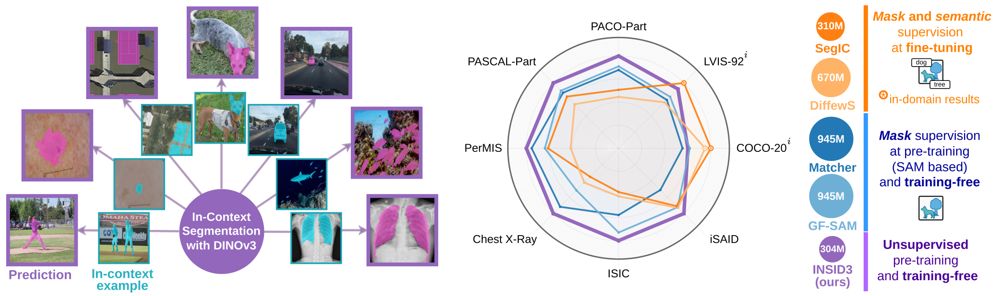
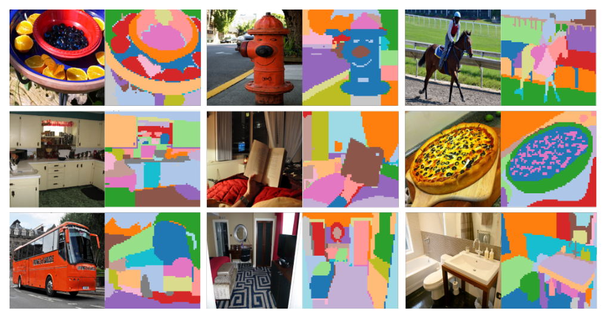
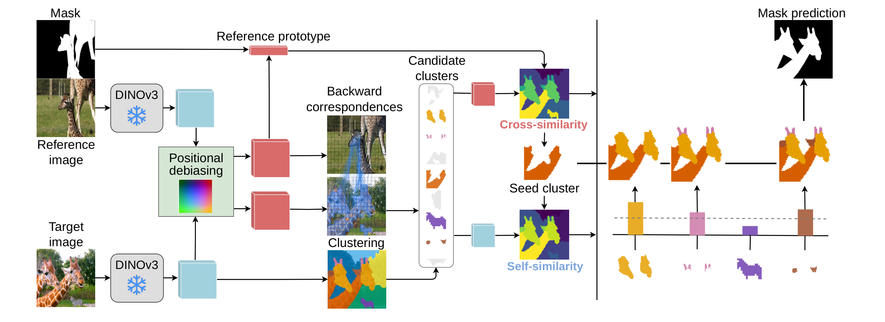
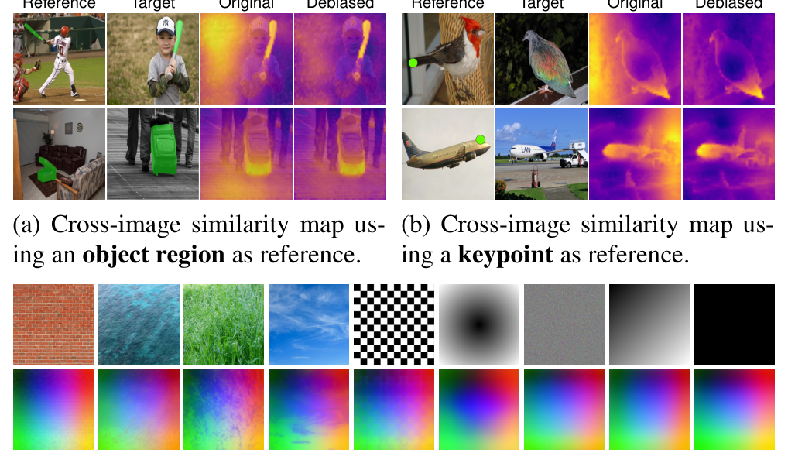
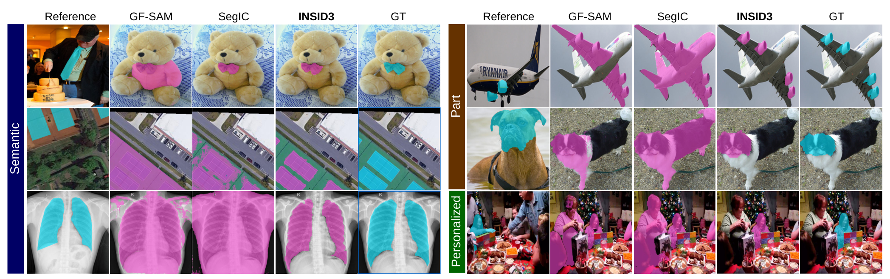
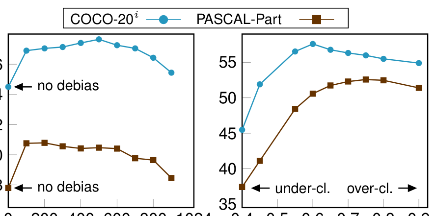
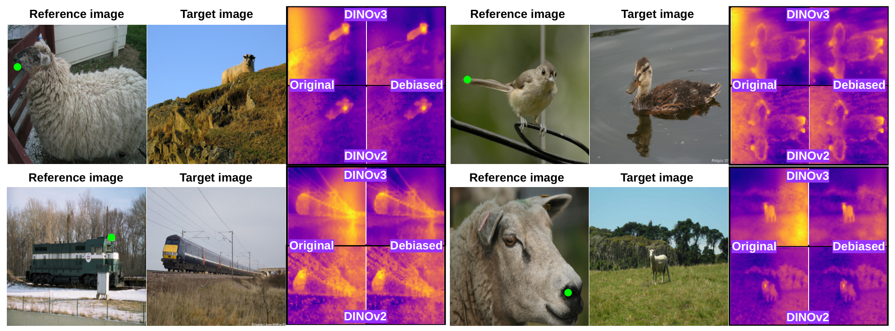

INSID3 深读：上下文分割明明同时需要"跨图语义匹配"和"图内区域分组"，为什么一个冻结的 DINOv3 就能把两件事都办了——还不用任何解码器、微调或 SAM？
导读。上下文分割（in-context segmentation, ICS）的任务设定很苛刻：只给一张标注样例（参考图 + 它上面的一个二值 mask），就要在目标图里把同一个概念抠出来——而这个"概念"可以是整只狗（语义）、狗的耳朵（部件）、或者"我家那只狗"（个体）；目标域还可能是自然图、医学 X 光、水下、航拍。这件事的底层约束是两件必须同时成立的事：① 跨图语义匹配——在目标图里找到和参考概念语义对应的位置；② 图内区域分组——把这些位置补全成一块空间连贯、粒度正确的 mask。前人要么微调 VFM 装一个分割解码器（in-domain 涨点但泛化崩盘、粒度被训练分布锁死），要么把 DINOv2 + SAM 拼成多阶段流水线（泛化好但架构臃肿、mask 粒度被 SAM 的先验锁死）。本文的核心张力是：这两件事真的需要两套模型、外加 mask 监督吗？INSID3 的答案是——一个冻结的 DINOv3 就够了。它发现 DINOv3 的稠密特征本就同时具备强图内自相似（天然把同一物体/部件聚在一起）和跨图语义对应，唯一的拦路虎是一条隐蔽的位置偏置（不同图里相同坐标的 patch 会无视语义地虚假高相似）。INSID3 用一个训练自由的正交投影把位置成分投掉，再用"原始特征做图内聚类、去偏特征做跨图匹配"的分工，把两件事统一进同一套表征。结果：语义/部件/个体三类一共 9 个基准全面领先，平均 +7.5% mIoU，参数 304M（约 SAM 流水线 945M 的 1/3），零 mask 监督、零微调；顺手把去偏迁移到语义对应任务上还能拿 +6.6% PCK。
{kind=link}

核心问题：ICS 的两个矛盾需求，为什么逼出了"两套模型"——而它们真的必须吗？#
先把任务讲清楚。给参考图 $I^r$ 和它的二值 mask $M^r$，再给目标图 $I^t$，要在 $I^t$ 里输出"同一概念"的 mask。注意"概念"的粒度是开放的：可以是语义类（"狗"，分割目标图里所有狗）、部件（"狗耳朵"）、个体（"我家这只狗"）。这意味着任何把粒度写死的设计都会在某个设定上翻车。
问：要完成这件事，最少需要哪几种能力？
引导：把"从一张样例到一张目标 mask"拆成必经的两步。第一步，你得在目标图里找到概念在哪——这需要跨两张图建立语义对应（参考概念 ↔ 目标位置）。第二步，找到的位置往往只是概念的一部分（比如只命中了狗头），你得把它补全成一块完整、连贯、粒度正确的区域——这需要在目标图图内判断"哪些像素属于同一概念"。
答：① 跨图语义匹配（cross-image correspondence）+ ② 图内区域分组（intra-image grouping）。前者要求特征"无视位置、只看语义"地跨图对齐；后者要求特征"位置连贯地"把同物体/部件聚团。这两个需求对特征的诉求恰好相反——一个要抹掉空间、一个要利用空间。前人之所以走向"两套模型"，正是因为他们手里的 VFM 没法同时满足这两条。
顺着这个矛盾看前人两条路线，就知道它们各自的代价：
- 路线 A：微调 VFM 装解码器（SegIC 在 DINOv2 上训分割头、DiffewS 微调 Stable Diffusion）。它把"分割"显式地教给模型，in-domain 涨点很猛（SegIC 在 COCO-20$^i$ 上 76.1 mIoU），但代价是把模型绑死在训练分布上：换到 iSAID（航拍）、X-Ray（医学）就大幅掉点，粒度也被训练标注锁死。本质上是用监督把泛化换成了 in-domain 精度。
- 路线 B：拼接冻结 VFM（Matcher / GF-SAM = DINOv2 找对应 + SAM 出 mask）。它保住了泛化（都是冻结的预训练模型），但语义匹配和 mask 生成分属两个特征空间，必须靠点选、prompt 工程、mask 过滤、打分这些胶水步骤来协调；架构臃肿（945M）、推理慢（GF-SAM 1030ms vs INSID3 302ms），且 mask 的粒度被 SAM 的预训练先验锁死，做不好部件级。
那么真正的问题来了：有没有一个 backbone，本身就同时具备"图内连贯分组"和"跨图语义对应"？本文押注 DINOv3 [56]。它是纯自监督 VFM，用 Gram anchoring 目标 + 高分辨率后训练，被显式设计成产出稠密、局部化的特征。论文 Fig. 2 给出第一条直觉证据：对 DINOv3 稠密特征做凝聚聚类，得到的簇天然贴合物体级和部件级的连贯区域——也就是说"图内分组"这件事 DINOv3 已经免费送了。
{kind=link}

贡献拆解：三句话，但每一句都对应一个可独立验证的主张#
论文自陈三条贡献，我按"主张 → 它要证明什么 → 用什么证据"重排，方便后面逐条核对（避免把营销当结论）：
| 贡献 | 它声称什么 | 用什么证据验证（本文后续章节） |
|---|---|---|
| ① 单一自监督 VFM 足以做训练自由 ICS | 不需要解码器/微调/模型拼接，DINOv3 一个就够 | 表 1（9 基准全面领先且仅 304M）；Fig. 2（图内分组免费）；表 8（换掉 DINOv3 即崩） |
| ② 跨域跨粒度泛化更强 | 对微调法与 SAM 流水线平均 +7.5% mIoU | 表 1（语义/部件/个体三类）；表 7（5-shot）；Fig. 5/10（定性） |
| ③ 揭示并修正 DINOv3 的位置偏置 | 一个训练自由的正交投影，且能迁移到 ICS 之外 | Fig. 4/8（相似图）；表 2/4（SPair-71k 语义对应 +6.6% PCK）；Fig. 9（PCA 不伤语义） |
数据与评测：9 个基准横跨四个域，全在"分布外"考泛化#
INSID3 训练自由，所以"数据"指的全是评测基准。它把 ICS 统一成三类任务、9 个数据集，且关键在于这些数据集大多不是任何方法的训练域，专门拷问泛化：
| 任务 | 数据集 | 规模 / 域 |
|---|---|---|
| 语义（一类的所有实例） | COCO-20$^i$ | 80 类物体（常见自然图） |
| LVIS-92$^i$ | 920 类，强长尾 | |
| ISIC2018 | 皮肤病灶（医学） | |
| Chest X-Ray | 肺部筛查 X 光（医学） | |
| iSAID-5$^i$ | 15 类，遥感/航拍 | |
| SUIM | 8 类，水下成像 | |
| 部件（同一物体部件） | PASCAL-Part | 15 类共 56 个部件 |
| PACO-Part | 75 类共 303 个部件 | |
| 个体（同一实例） | PerMIS | 16 类，存在大量视觉相似干扰实例 |
评测协议：每个设定给一张标注参考 mask（1-shot；补充材料另测 5-shot），主指标 mIoU。语义对应迁移实验用 SPair-71k，指标 PCK@T。实现细节：DINOv3-Large 编码器，输入 resize 到 $1024\times1024$（对齐 SAM 类方法），mask 在 patch 分辨率预测后双线性插值回原图，并按 [21,22,40,60] 用一个 CRF [36] 做后处理精修。
Pipeline 全景：一条"去偏 → 聚类 → 选种子 → 聚合"的单 backbone 流水线#
先给整体地图，再逐块拆机制。INSID3 在同一个冻结 DINOv3 特征空间里串起四步，没有第二个网络：
{kind=link}

问：为什么是"去偏特征做跨图、原始特征做图内"这样反着用？
引导：回到 §核心问题那对相反诉求。跨图匹配要"无视位置只看语义"——位置信息是有害的，要投掉。图内分组要"位置连贯地聚团"——空间结构是有益的，要留着。
答：所以 INSID3 把 DINOv3 特征的两种成分按用途分离：cross-image 用去偏特征（消位置）、intra-image 用原始特征（留结构）。这正是它能用"一套表征服务两个相反诉求"的关键工程决策——不是换模型，而是对同一组特征做两种读法。
方法 / 四个机制：从"位置偏置诊断"到"乘法聚合"，每步都先讲动机#
机制 0：诊断——DINOv3 特征里藏着一条"位置偏置"
动机先行。能力 ①（跨图匹配）若直接用 DINOv3 原始特征做，会出什么问题？论文用一个诊断工具回答：给参考 mask 算一个参考原型 $p^r$（前景 patch 特征的均值），再算它和每个目标 patch 的相似度，可视化成相似图。
公式读法。$p^r$ 把参考概念压成一个 $D$ 维向量（"这个概念长什么样"的语义指纹）；$\mathrm{sim}(i)$ 是目标图每个位置和这个指纹的内积。理想情况下，只有目标图里语义对应的位置才该高亮。
但 Fig. 4 暴露了问题：相似图除了正确的语义高亮外，还稳定地在"与参考相同的绝对坐标"处虚假高亮，与语义无关——尤其在目标图语义稀薄处（如均匀背景）。也就是说"参考概念在左上 → 目标图左上无脑亮一片"。
{kind=link}

公式读法。$BB^{\top}$ 是投影到位置子空间的投影矩阵；$\mathbb{1}_D-BB^{\top}$ 就是投到它的正交补。一句话：把每个 patch 特征里"位置说了算"的那几个方向减掉，剩下"语义说了算"的部分。整个 $B$ 离线算一次、存起来，推理时只多一次矩阵乘——几乎零开销（补充材料表 12：去偏并入 forward 共 78ms）。
近似 2：被投掉的方向不含语义。这不是默认成立的——万一投掉了有用的语义维度呢？论文用 Fig. 9 / 表 2 验证：去偏后 PCA 压缩反而更利于语义对应（Debias+PCA 全程优于 PCA-original），说明被投掉的确实主要是位置而非语义。这两条验证下面 §消融会再展开。
机制 1：图内分组——凝聚聚类，而不是 K-means / DBSCAN
动机先行。ICS 粒度是开放的，所以聚类不能预设簇数。K-means 要先定 $K$（与开放世界冲突）；DBSCAN 在高维特征里"密度"概念失效、且常需先降维。INSID3 选凝聚聚类（agglomerative）：自底向上逐步合并局部相似 patch，天然契合 DINOv3 特征的空间平滑性，且只有一个阈值 $\tau$ 直观地控制粒度——不固定簇数。
公式读法。这一步刻意用原始特征（不去偏）——因为图内分组要的就是空间结构。$\tau$ 大→簇细（利于部件），$\tau$ 小→簇粗（利于整物体），论文固定 $\tau=0.6$ 取折中。
机制 2：选种子——反向对应 + 跨图相似度，在去偏空间里挑
动机先行。直接拿式 1 的相似图阈值化为什么不行？因为参考原型常常"过度激活"相关概念：拿"人头"的原型去匹配，会把整个人都点亮。要在正确粒度上匹配，需要更克制的机制。INSID3 用反向对应（backward correspondence）：对每个目标 patch $i$，反过来找它在参考图里最像的 patch；只有当这个最近邻落在参考 mask 内，才保留 $i$。
公式读法。"反向"的妙处在于隐式利用了参考图里没标的负样本：如果目标 patch 更像参考图里的背景（mask 外），它就被否决。这把"过度激活"自然压住了。再把候选 $C_{NN}$ 与预先算好的簇取交，得到候选簇集合 $C_{cand}=\{G_k\mid G_k\cap C_{NN}\neq\varnothing\}$。
然后在去偏空间为每个候选簇 $G_k$ 和参考区域各算原型，用跨图相似度选出最对齐的种子簇：
机制 3：聚合补全——跨图语义 × 图内自相似的乘法门
动机先行。种子簇 $G^{*}$ 通常只覆盖概念最具判别力的一部分（人头、长颈鹿的脖子）。要补全成完整概念，得决定"还该并入哪些簇"。只靠跨图相似度 $s^{cross}$ 不稳——遮挡/视角变化下，语义相关区域可能反而不相似。所以 INSID3 引入第二条独立线索：图内自相似——DINOv3 同图内同概念的簇在特征空间里彼此靠近。两条线索相乘：
公式读法。$s^{intra}_k$ 在原始特征里算（图内要结构）、$s^{cross}_k$ 在去偏空间里算（跨图要语义）——又一次"两种读法"。乘法是关键：一个簇必须既语义对得上参考、又结构上贴着种子，才会被并入；任一条接近 0，乘积就被否决。这是个"双门 AND"，比加法/单线索都更稳。
训练配置：没有训练——但"零超参调优"这件事本身要被验证#
INSID3 训练自由，所以这一节谈的是"超参与算力"，而不是优化器/学习率。论文的核心声明是：只有三个标量超参，且一次性在 COCO-20$^i$ 训练集上用 3 折交叉验证选定后，跨所有数据集/域/任务全部固定，不做任何 dataset/task 特定调优。
| 超参 | 含义 | 取值 |
|---|---|---|
| $\tau$ | 凝聚聚类敏感度（控粒度） | 0.6 |
| $\alpha$ | 聚合阈值（控并簇严格度） | 0.2 |
| $s$ | 去偏秩（投掉的位置方向数） | 500 |
算力 / 推理成本（补充材料表 11–13）。单张 RTX 4090、$1024\times1024$ 下，INSID3 单样例推理 302ms，而最强基线 GF-SAM 要 1030ms、Matcher 要 9000ms。细分（表 12）：编码+去偏 78ms、相似度与簇打分 3ms、凝聚聚类 166ms（主成本，token 数二次复杂度）、CRF 精修 55ms。论文坦言所有计时为 32 位精度、100 次平均，半精度还能更快。本文不涉及训练算力，故无 GPU-hours；上述推理时延为论文披露数字，不等同于你机器上的实际账单。
实验结果：9 基准全面领先，且赢在"分布外"#
主结果是表 1（1-shot，mIoU%）。我把原表完整转写（这是论文最核心的论据，不做"按表 1"式略写）。灰底=该方法在对应数据集训练集上训过；INSID3 是表中唯一既不预训练用 mask 监督、也不微调的方法。
| 方法 | Encoder | #Param | LVIS-92$^i$ | COCO-20$^i$ | ISIC | SUIM | iSAID | X-Ray | PASCAL | PACO | PerMIS | Avg |
|---|---|---|---|---|---|---|---|---|---|---|---|---|
| 任务特定微调：语义 + mask 监督 | ||||||||||||
| Painter | ViT | 354M | 10.5 | 33.1 | – | – | – | – | 30.4 | 14.1 | – | – |
| SegGPT | ViT | 354M | 18.6 | 56.1 | 37.5 | 34.9 | 30.9 | 87.5 | 35.8 | 13.5 | 18.7 | 37.1 |
| SINE | DINOv2 | 373M | 31.2 | 64.5 | 25.8 | 50.7 | 38.3 | 39.8 | 36.2 | 23.3 | 42.5 | 39.1 |
| DiffewS | Stable Diffusion | 890M | 31.4 | 71.3 | 27.8 | 48.9 | 47.5 | 41.6 | 34.0 | 22.8 | 35.2 | 40.1 |
| SegIC | DINOv2 | 310M | 44.6 | 76.1 | 25.3 | 52.5 | 46.1 | 34.5 | 39.9 | 25.9 | 51.8 | 44.1 |
| SegIC (COCO) | DINOv2 | 310M | 35.7 | 75.6 | 22.5 | 52.9 | 40.8 | 30.8 | 38.6 | 25.1 | 44.9 | 40.8 |
| 训练自由：mask 监督预训练（SAM 系） | ||||||||||||
| PerSAM | SAM | 640M | 11.5 | 23.0 | 23.9 | 28.7 | 19.2 | 31.7 | 32.5 | 22.5 | 48.6 | 26.8 |
| Matcher | DINOv2 + SAM | 945M | 33.0 | 52.7 | 38.6 | 44.1 | 33.3 | 70.8 | 42.9 | 34.7 | 63.8 | 46.0 |
| GF-SAM | DINOv2 + SAM | 945M | 35.2 | 58.7 | 48.7 | 53.1 | 47.1 | 51.0 | 44.5 | 36.3 | 54.1 | 47.6 |
| GF-SAM† | DINOv3 + SAM | 945M | 31.8 | 54.8 | 50.9 | 50.5 | 46.7 | 56.1 | 44.9 | 34.4 | 52.6 | 47.0 |
| † + 本文去偏 | DINOv3 + SAM | 945M | 34.6 | 55.9 | 51.8 | 52.9 | 47.6 | 60.0 | 46.2 | 36.1 | 54.5 | 48.8 |
| 训练自由：无监督预训练 | ||||||||||||
| INSID3 (ours) | DINOv3 | 304M | 41.8 | 57.6 | 54.4 | 54.9 | 52.1 | 78.8 | 50.5 | 38.7 | 67.0 | 55.1 |
读这张表要看三件事：
- 平均分。INSID3 55.1，比最强训练自由基线 GF-SAM（47.6）高 7.5，比最强微调法 SegIC（44.1）高 11。且参数 304M ≈ SAM 流水线 945M 的 1/3。
- "训练域陷阱"。微调法 SegIC 在 COCO-20$^i$ 上 76.1（最高），但一出域就塌——iSAID 比 INSID3 低 6、X-Ray 只有 34.5（INSID3 78.8）。这正是 Fig. 1 雷达图橙色"内圈强外圈塌"的数字版。
- 去偏的可移植性。看 GF-SAM† 那两行：把 DINOv2 换成 DINOv3 本身没多大用（因为 GF-SAM 只用稀疏匹配点去 prompt SAM，丢掉了大部分稠密信息）；但加上本文去偏，GF-SAM 平均涨到 48.8——去偏是个可以插到别人方法上的独立增益。
部件与个体。部件分割上 INSID3 比 GF-SAM 高 +6.0（PASCAL）/ +2.4（PACO），比微调法 SegIC/DiffewS 高 +10.6/+16.5（PASCAL）。个体分割（PerMIS）INSID3 67.0，超 GF-SAM +12.9、SegIC +15.2、DiffewS +31.8——个体任务最难在"多个视觉相似干扰实例"，INSID3 靠式 4 的反向对应吃到了负证据来压住无关实例，这是只看正激活的旧方法做不到的。
{kind=link}


去偏迁移到语义对应：一个独立的、与分割解耦的验证
这是 §贡献③的关键交叉验证：把去偏单独拎到 SPair-71k 语义对应任务上测——这个任务不含分割，直接在 backbone 特征上量跨图对齐（PCK@T），从而把"去偏改善的到底是不是对应能力"这件事和分割流水线解耦。
| T | Small 原始 | Small 去偏 | Base 原始 | Base 去偏 | Large 原始 | Large 去偏 |
|---|---|---|---|---|---|---|
| 0.05 | 26.8 | 27.9 | 29.2 | 32.3 | 32.7 | 33.6 |
| 0.10 | 43.8 | 45.7 | 45.0 | 50.0 | 50.6 | 52.0 |
| 0.15 | 53.2 | 55.6 | 54.0 | 59.9 | 60.3 | 62.1 |
| 0.20 | 59.8 | 62.6 | 59.8 | 66.4 | 66.4 | 68.6 |
去偏在三个尺寸上一致涨 +0.9~6.6 PCK，且越严格的阈值（T 小）相对增益越大。结合补充材料表 4（DINOv2 去偏只涨 ≤+0.3，DINOv3 涨 +3.1~+6.6），这条对照非常干净地证明：位置偏置是 DINOv3 特有的、且去偏修正的确实是"跨图对应"这个能力本身，而非分割流水线里的某个副作用。
消融：每个设计选择都被"留一法"逐一拷问#
消融 1：聚类 + 聚合（表 3）——为什么不能只阈值化相似图？
| 变体 | COCO-20$^i$ | PASCAL-Part |
|---|---|---|
| 阈值化相似图 @0.55（式 1，无聚类） | 44.2 | 35.4 |
| 粗聚类 $\tau{=}0.5$（无聚合） | 50.6 | 31.1 |
| 细聚类 $\tau{=}0.6$（无聚合） | 42.8 | 36.2 |
| 本文：聚类 + 聚合，仅跨图相似 | 54.6 | 48.5 |
| 本文：聚类 + 聚合，自相似 + 跨图（式 6） | 57.6 | 50.5 |
这张表把"为什么需要聚合"讲透了：单纯阈值化最差；只聚类不聚合会陷入"粒度两难"——$\tau{=}0.5$ 利于整物体（COCO 50.6）却毁部件（PASCAL 31.1），$\tau{=}0.6$ 反之。INSID3 固定一个中间 $\tau$，把粒度难题交给聚合解决：加上跨图聚合就跳到 54.6/48.5，再叠上自相似（式 6 的乘法门）到 57.6/50.5。这正面证明了式 6 里"两条线索相乘"不是装饰，而是各贡献了一截。
消融 2：去偏秩 $s$ 与聚类粒度 $\tau$（图 7）
{kind=link}

消融 3：去偏真没伤语义吗？（补充 Fig. 8 / 表 5）
{kind=link}

去偏策略本身的消融（表 5，COCO-20$^i$ mIoU）：无去偏 54.5；用多视图增强平均（4 视图 55.7、12 视图 56.5）能减位置敏感但要 $n$ 次 forward；本文（1 张噪声图 SVD）57.6，且只多一次矩阵乘；用 5/10 张低语义图估也是 57.7——再次确认位置子空间稳定、单张噪声足矣。这条消融的价值在于：它排除了"是不是只是多次前向平滑带来的增益"这一替代解释，把功劳干净地归给"正交投影去偏"。
消融 4：换掉 DINOv3 就崩（表 8）——"是 DINOv3 而非别的"的必要性验证
| DINOv3 | DINOv2 | Franca | Perception Enc. | Stable Diff. |
|---|---|---|---|---|
| 57.6 | 45.1 | 39.2 | 48.4 | 33.2 |
这是全篇最关键的"必要条件"实验：保持 INSID3 算法不动，只换 backbone，其余 VFM 全部显著掉点。它把贡献①的因果落实了——不是 INSID3 的流水线随便配个 VFM 都行，而是 DINOv3"同时具备强语义对应 + 稠密局部结构"这一双重特性，才让 ICS 能从单一冻结 backbone 涌现。
消融 5：对照 SAM 3、空 mask 角例、5-shot（补充表 7/9/10）
- vs SAM 3（表 9，COCO-20$^i$）：把最新的 SAM 3 适配到 ICS——视频式传播 26.7、图像拼接式 52.9，而 INSID3 57.6，在不用任何分割监督的情况下仍高 4.7。
- 空 mask 角例（表 10）：目标图不含参考概念时该输出空 mask。INSID3 靠把式 6 的聚合判据同样施加到种子簇上，正确判空率 85%；而 PerSAM/Matcher/GF-SAM 这类 SAM 法设计上无法输出空 mask（总返回非空，实际 0%）。这是单 backbone 统一空间的一个意外红利。
- 5-shot（表 7）：只把对应阶段改成"多数投票 + 原型平均"、其余全不动，平均从 1-shot 稳涨到 59.9，比最强基线高 +6.1——证明方法即插即用地吃多样例。
局限与复现门槛：作者自陈 + reader 补刀#
作者自陈（补充 §F）：
- 一次只处理一个目标概念。目标图里有多个概念时要分别给参考 prompt，缺一个"一次推理同时推理多概念"的机制。
- 依赖 mask 形式的 prompt。不像 SAM 能用点/框这类更轻的标注；而 mask 更贵更慢，限制了交互式部署的便利性。论文把"支持更轻 prompt"和"实例级推理"列为未来方向。
reader 补刀（基于论文文本的推断，非作者声称）：
- 性能上限被冻结 DINOv3 锁死。表 8 已表明全靠 DINOv3 的特征质量；DINOv3 本身在某个域弱，INSID3 在该域就弱，无法靠训练补救。
- 凝聚聚类是 token 数二次复杂度。补充表 12 显示聚类 166ms 是单步最大成本；虽然表 13 表明高分辨率下仍可用（$1760^2$ 约 1.1s），但相对"一次矩阵乘"的去偏，这是真正的算力瓶颈。
- 三超参虽"一次定终身"，但都在 COCO 上选的。论文用跨域泛化结果间接说明其通用性；严格说，$\tau/\alpha/s$ 是否对某些极端域（如非自然图像）仍最优，是个开放问题——论文未对此逐域消融。
复现门槛：无需训练，门槛主要是 ① 拿到 DINOv3-Large 权重；② 一张噪声图离线估 $B$（一次性）；③ 一个 GPU 加速 dense CRF 做后处理。三超参公开（$\tau{=}0.6,\alpha{=}0.2,s{=}500$），官方代码已开源（见侧栏）。
总结：一个"认识论"贡献——分割不必被监督喂出来，它能从自监督表征里被"读"出来#
INSID3 把一句直觉做成了系统：当一个自监督 backbone 同时拥有"图内连贯结构"和"跨图语义对应"，上下文分割就不再需要解码器、微调或 SAM——只需要正确地区分"何时该信任它的位置信息、何时该投掉它"。它的三个可独立验证的支点是：
- 位置偏置的发现与训练自由修正——用噪声图估低维位置子空间、正交投影投掉；并用 SPair-71k（解耦于分割）证明改善的是对应能力本身（+6.6 PCK），还能插到 GF-SAM 上涨点。
- "两种读法"的分工——原始特征做图内聚类、去偏特征做跨图匹配，把 ICS 的两个相反诉求统一进一套表征。
- 乘法聚合——跨图语义 × 图内自相似的双门，把"克制定位 + 完整补全"这对张力解开。
结果是 9 基准、四域、三粒度全面 SOTA（平均 +7.5 mIoU），参数仅 1/3、推理快 3 倍以上、零 mask 监督，外加 85% 的空 mask 判空率这种 SAM 系做不到的红利。它最值得带走的，不是某个 SOTA 数字，而是那条认识论主张：随着自监督表征变强，"分割"这类下游能力可以从表征里直接涌现，而减少监督反而可能换来更鲁棒、更可迁移的表征。
参考与诚实边界#
- 原始论文：Cuttano, Trivigno, Reich, Cremers, Masone, Roth. INSID3: Training-Free In-Context Segmentation with DINOv3. CVPR 2026（Oral）. arXiv:2603.28480v1. 项目页 visinf.github.io/INSID3，代码 github.com/visinf/INSID3。
- 关键引用方法：DINOv3 [56]、DINOv2 [47]、SAM [33]、Matcher [39]、GF-SAM [69]、SegIC [41]、DiffewS [74]、PerSAM [72]、SegGPT/Painter [64,63]、SPair-71k [42]、凝聚聚类 [43]、CRF [36]。完整文献见原文 References。
- kexue:su 归因红线：本页用
kexue:su的科学推导方法论（动机先行、假设显式、≥2 路交叉验证、重新推导）组织机制部分；但检索其语料库时未命中任何与"位置偏置 / 正交投影去偏 / DINO 特征匹配 / 上下文分割"主题相关的卡片（返回的是 GAN 级联抑制、中文分词、Muon 优化器、Embedding 共享等无关条目）。按归因红线，全文不对苏剑林做任何 [archives/XXXX] 引用——只借方法、不虚构出处。 - 诚实边界：所有数字（表 1–13、PCK、参数量、时延）均转写自论文正文与补充材料；推理时延为论文披露数字、不等同于读者机器上的实际账单；"reader 补刀"一节明确标注为基于论文文本的推断而非作者声称；论文未逐项说明之处（如三超参对极端域是否仍最优）已写"论文未说明 / 未逐域消融"。